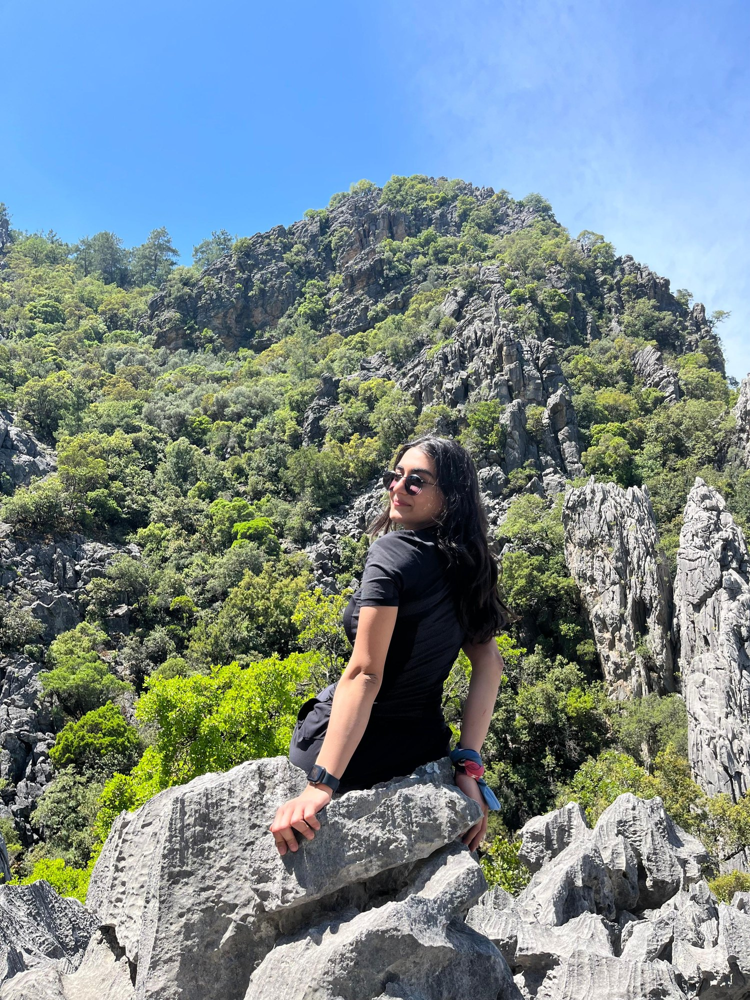
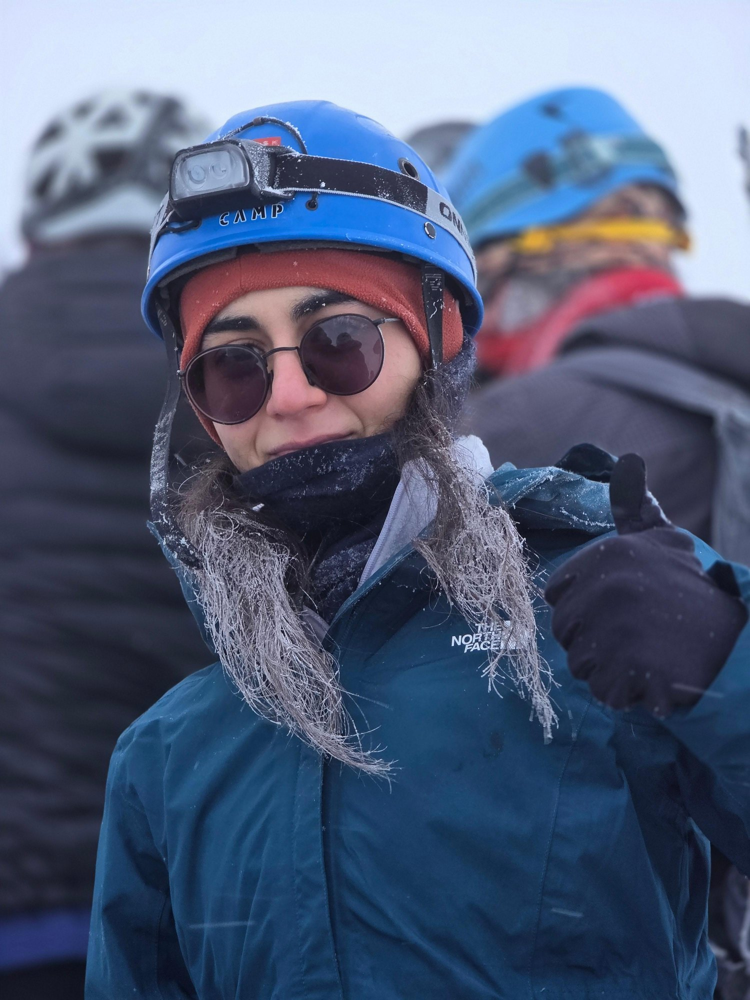

I’m Beril Kiyanfer, born in 2002—a computer engineer from Monday to Friday and a mountain explorer when the weekend begins.
This journal is where I collect summits, hiking routes, rock climbs, camp stories, and the little moments that make every trip memorable.
See you somewhere between the trail and the summit.